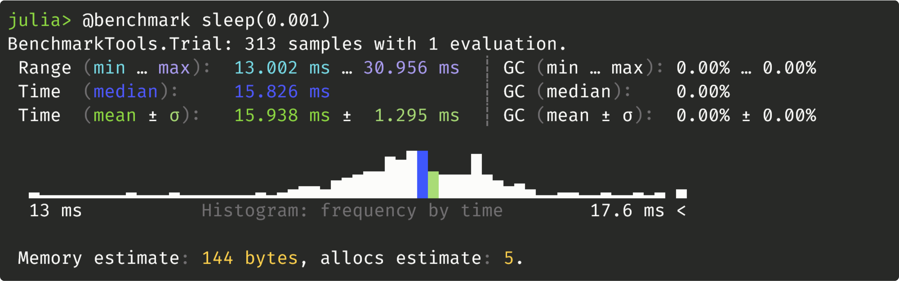
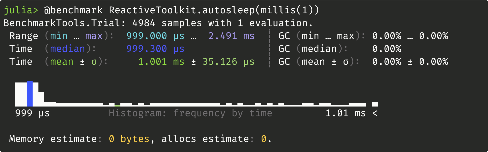

Examples and Design Patterns
These are fairly minimal toy examples. Many of them may not be a good idea, or lead to something that is a bad idea. For now, please treat them as food for thought.
Topics vs Captured Variables
As a closure:
@after seconds(3) begin
i = 0
task = @every millis(5) println("hello! i=$(i+=1)")
@after seconds(3) kill(task)
end
# i is not definedAs a topic:
@topic j = 0
@after seconds(3) begin
task = @every millis(5) println("hello! j[]=$(j[]+=1)")
@after seconds(3) kill(task)
end
# j[] is 600Timing
Windows 11 22H2:  ReactiveToolkit.jl: 
Topic/Task Generators
Sometimes we want lots of tasks that are almost identical, but with different parameters. Why not use a loop to build them? (see tests_compound.jl)
Custom Message Types
Since topics can hold any julia type, messages can be defined by whatever type we want. This includes custom structs:
struct RobotStatus
battery_level::Float64
is_ok::Bool
end
@topic status = RobotStatus(100, true)existing data structures and container types:
@topic status = (100, true)
@topic status = Dict("battery_level"=>100, "is_ok"=>true)
@topic status = (battery_level=100, is_ok=true)
@topic status = "BATT:100,ISOK:1"or literally anything:
@topic status::Any = (100, true)
status[] = Dict("battery_level"=>100, "is_ok"=>true)
status[] = "I hope this doesn't break anything"You may see why this isn't necessarily a good idea. But it's possible!
Automatic Plotting
If we lean into the abstraction, we can do things like this:
using ReactiveToolkit
using CairoMakie
@topic idx = 1
@topic fig = Figure()
@topic data = Vector{Float64}[]
@on fig "autosave" begin
save("./plots/figure_$(idx[]).png", fig[])
idx[] += 1
end
@on data "autoplot" begin
fig[] = lines(data[])
end
# now we can automatically plot and save data simply by storing it:
data[] = rand(10)Performance
It is difficult to make fair, direct comparisons between ReactiveToolkit.jl and other real-time/robotics frameworks such as ROS or LCM because this package is fairly unique in how it works and what it does. With this in mind, consider the basic operation of a reactive framework: one task reacting to a value generated by another task.
In the context of ROS, this would be a publisher node publishing to a topic and triggering a callback function of a subscriber node. In the context of ReactiveToolkit.jl, this would be:
@topic x = 0
@on x do_something()
x[] = 1
# something is doneFor such an operation, ReactiveToolkit.jl will be some 10,000x faster than ROS.
What?
Again, this is not a fair or direct comparison. ROS nodes are independent processes, and ROS marshalls data between them using TCP/IP. This adds the overhead of serialization, the several steps of the TCP/IP transfer itself, potentially additional transfers to ensure delivery, the OS scheduling the other process, performing a context switch, and finally deserialization. In contrast, ReactiveToolkit.jl runs entirely within a single (preferrably multi-threaded) julia process, and its "nodes" are concurrent tasks with a shared memory pool. Marshalling data becomes a simple matter of mutual exclusion, with the overhead reduced to the few microseconds needed to acquire a lock.
Blink
Blinking an LED on a microcontroller 10 times a second could be done as follows:
using ReactiveToolkit
using LibSerialPort
@topic led_cmd = false
mcu = SerialPort("COM3")
@every millis(100) "led blinker" begin
!isopen(mcu) && open(mcu)
end begin
led_cmd[] = !led_cmd[]
write(mcu, "set led $(led_cmd[])\r\n")
end begin
isopen(mcu) && close(mcu)
endNote that this example assumes a microcontroller with native USB (like a Teensy 4.x or ESP32-S3) on port COM3 with firmware set up to react to the serial commands set led false and set led true. Older microcontrollers (which use a UART-based FTDI chip to implement USB communication) will also need a baud rate set as the second argument to the SerialPort constructor.
Also note that serial transfers have a non-negligible latency, so this design pattern is not a good idea above ~200Hz.
Utilities
Consider the task which monitors x and prints its value whenever it changes:
@on x "x monitor" println("x is now: $(x[])")A useful design pattern is to wrap a commonly used task template in a constructor function. We can then use and reuse this constructor to generate tasks with behavior that can be customized to a given context via its arguments. For example, this is exactly how we imlement ReactiveToolkit.echo:
echo(x::AbstractTopic) = @on x "echo $(x.name)" println(x.name, ": ", x[])@topic x = 0
echo_x = echo(x)
# while active, the echo_x task will print the value of x whenever it changes
kill(echo_x)Future
Here are some things I'm considering to add in the future:
- operators on topics in the style of eg.
Reactive.jl, likemerge,filter,foldp, etc. - cleaner mutation of topics containing mutable types (eg.
push!(x[], 5)should work intuitively). - a universal serialization scheme for marshalling of topics.
- a cpp implementation of the serializer, to facilitate communication with microcontrollers.
- UDP communication/UDPTopics
- integration utilities for eg. ROS, LCM, etc.
- built-in support for various interfaces (eg. serial, HID, UDP, etc.)
- throttling of task updates (user adjustable, defaulting to something like a few MHz)
- compound triggers like
@onanyand@onall - pop-up terminal in a separate window dedicated for log/info messages
- a clean way to restrict tasks to the main thread for packages which don't play well with multithreading (I've had some issues with Makie.jl jumping threads)
- thread pools and task priorities
- documentation on using ReactiveToolkit with existing primitives like Channels
- graph visualization of the task network
- real-time plotting
- logging utilities
- smarter, more useful, adjustable buffer sizes for topics
A UDP backend would allow inter-process and inter-device communication. I have been playing with some prototypes, and almost made it the default Topic type, but chose not to because:
- UDP is not nearly as fast as shared memory
- UDP requires a good serialization/deserialization scheme
- Julia's UDP stack relies on calls to lib_uv, which I believe are serialized